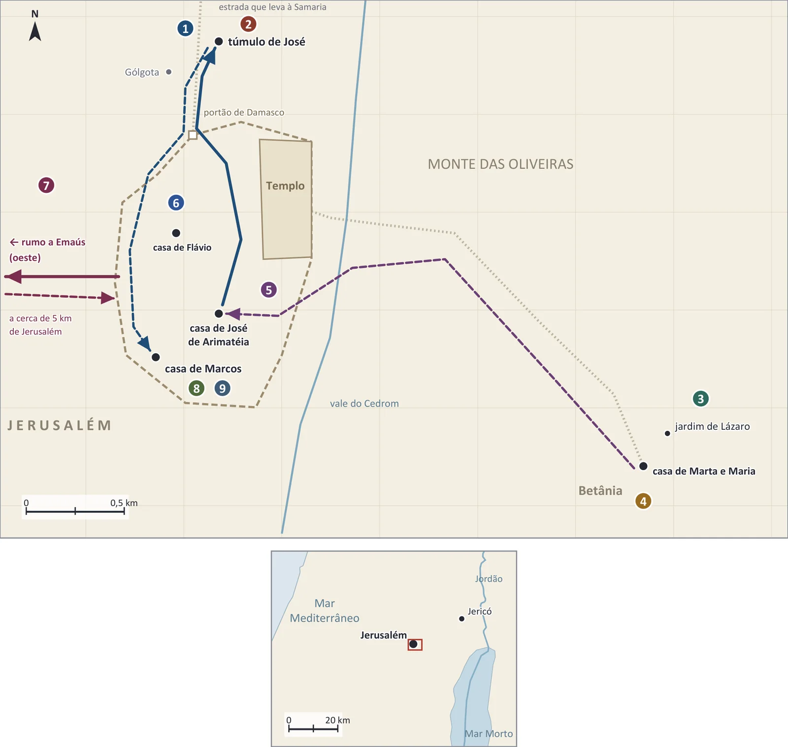
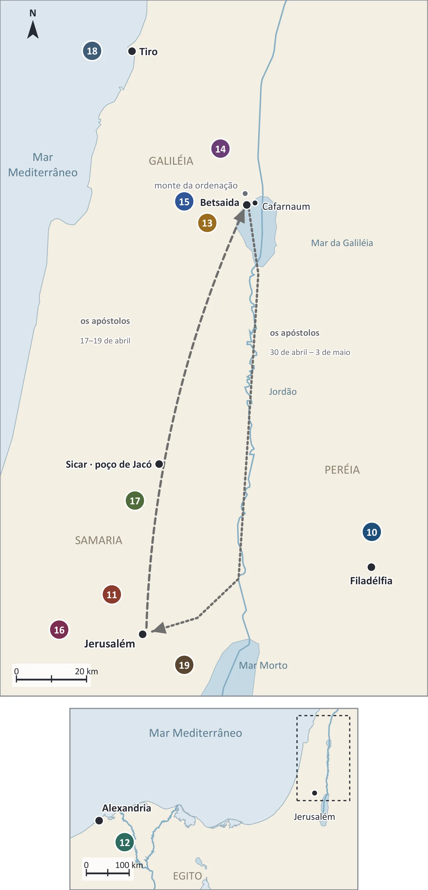

Parte VII A ressurreição, as aparições e o que veio depois
Documentos 189–196
Documento 189A Ressurreiçãoabril de 30 d.C.
| Acontecimento | O Livro de Urântia | Bíblia |
|---|---|---|
| (Introdução) | 189:0.1–3 | Nenhum |
| Depois do sepultamento de Jesus, o dirigente dos arcanjos convocou o seu conselho da ressurreição, mas por volta da meia-noite concluíram que as criaturas não podiam ajudar o seu Criador a voltar à vida. O Ajustador Personalizado de Jesus disse às hostes celestes que Michael tinha o poder de dar a sua vida e de retomá-la. | ||
| 1. O Trânsito Moroncial | 189:1.1–13 | Nenhum |
| Aos dois minutos depois das três horas da manhã de domingo, 9 de abril de 30 d.C., a forma e a personalidade moronciais ressuscitadas de Jesus saíram do túmulo de José. O seu corpo físico permaneceu ali, nas suas mortalhas de linho, e as pedras da entrada e os selos de Pilatos ficaram intactos. Ele apareceu como uma personalidade moroncial semelhante aos ascendentes ressuscitados dos mundos das mansões. | ||
| 2. O Corpo Material de Jesus | 189:2.1–9 | Mt 28:2-4, 11-15 |
| O dirigente dos arcanjos pediu a Gabriel o corpo mortal de Jesus e recebeu permissão, e as hostes celestes dissolveram-no quase instantaneamente. Os intermediários secundários rolaram as pedras da entrada do túmulo, e os guardas, assustados, fugiram. Os líderes judeus subornaram os vinte guardas para que dissessem que os discípulos haviam roubado o corpo.Difere da BíbliaMateus diz que um anjo do Senhor desceu em meio a um terremoto e rolou a pedra, ao passo que O Livro de Urântia atribui isso aos intermediários secundários; explica que o túmulo estava vazio porque o corpo foi dissolvido, e não ressuscitado. | ||
| 3. A Ressurreição Dispensacional | 189:3.1–5 | Nenhum |
| Pouco depois das quatro e meia da manhã de domingo, o Michael moroncial ordenou a Gabriel que iniciasse o chamado da lista de ressurreição do planeta. Os sobreviventes adormecidos de Urântia desde os dias de Adão apareceram então nas salas de ressurreição de mansônia: era a terceira ressurreição dispensacional. | ||
| Mapa 37O dia da ressurreição: aparições em Jerusalém e em BetâniaDomingo, 9 de abril de 30 d.C. | ||
| 4. A Descoberta da Tumba VaziaMapa 37-① O túmulo · às cinco mulheres | 189:4.1–14 | Mt 28:1-10; Mc 16:1-11; Lc 24:1-11; Jo 20:1-2, 11-18 |
| Por volta das três e meia da manhã de domingo, Maria Madalena e outras quatro mulheres chegaram ao túmulo com ungüentos e encontraram apenas as mortalhas. Quando um estranho que tomaram pelo jardineiro chamou: “Maria”, reconheceram o Mestre. Jesus disse-lhes que contassem aos apóstolos, e a Pedro, que ele havia ressuscitado.Difere da BíbliaOs Evangelhos fazem anjos ou um jovem vestido de branco anunciar a ressurreição no túmulo, ao passo que O Livro de Urântia não tem nenhum anúncio angélico; o próprio Jesus apareceu às mulheres, cujos nomes e número variam nos Evangelhos, mas que ele fixa em cinco. | ||
| 5. Pedro e João na TumbaMapa 37-② O túmulo · a Maria Madalena | 189:5.1–5 | Lc 24:12; Jo 20:3-10 |
| Pedro e João correram ao túmulo e encontraram-no vazio, com as mortalhas dispostas em ordem. Pedro pensou que o corpo havia sido roubado, mas João perguntava-se por que as mortalhas tinham ficado intactas. Depois que partiram, Jesus apareceu de novo a Maria Madalena e fê-la dizer aos apóstolos que iria adiante deles para a Galiléia.Difere da BíbliaO Evangelho de João diz que o outro discípulo viu e creu, ao passo que O Livro de Urântia diz que nenhum dos dois apóstolos compreendeu claramente o que havia acontecido, e que Jesus apareceu então a Maria uma segunda vez. | ||
Mapa 37O dia da ressurreição: aparições em Jerusalém e em Betânia
Domingo, 9 de abril de 30 d.C. · Documentos 189–191

- ①O túmulo · às cinco mulheresPor volta das três e meia, as cinco mulheres saídas da casa de José passaram pela porta de Damasco e chegaram diante do túmulo vazio; Jesus, que Maria Madalena tomou pelo jardineiro, falou-lhes. Elas voltaram apressadas para a casa de Marcos (tracejado). [189:4.2–13]
- ②O túmulo · a Maria MadalenaDepois que Pedro e João viram o túmulo e partiram, ele apareceu de novo a Maria Madalena, que se demorara ali. [189:5.1–5]
- ③Betânia · o jardim de LázaroPouco depois do meio-dia, a Tiago, o irmão mais velho de Jesus, que estava de pé no jardim de Lázaro diante do túmulo vazio. Maria Madalena também tinha ido para lá. [190:2.2–3]
- ④Betânia · a casa de Marta e MariaPouco antes das duas horas, à sua família terrena e aos amigos dela, vinte ao todo; ele apareceu na porta dos fundos, que estava aberta. [190:2.6]
- ⑤A casa de José de ArimatéiaPor volta das quatro e quinze, a cerca de vinte e cinco mulheres crentes. Maria Madalena voltara de Betânia poucos minutos antes (tracejado). [190:2.7; 190:3.1]
- ⑥A casa de FlávioPor volta das quatro e meia, a cerca de quarenta crentes gregos, embora as portas estivessem bem trancadas. [190:4.1]
- ⑦Na estrada de EmaúsPoucos minutos antes das cinco horas, a cerca de cinco quilômetros de Jerusalém, aos irmãos Cleofas e Jacó. Emaús fica a cerca de onze quilômetros a oeste de Jerusalém. Eles voltaram apressados para Jerusalém (tracejado). [190:5.1–7]
- ⑧O jardim da casa de Marcos · a PedroPerto das oito e meia da noite, a Simão Pedro, no jardim da casa de Marcos. [191:1.1–2]
- ⑨A sala de cima · aos dez apóstolosPouco depois das nove horas, no meio dos dez apóstolos, na sala de cima, com todas as portas fechadas com o ferrolho. Tomé não estava presente. [191:0.1; 191:2.1–2]
Documento 190As Aparições Moronciais de Jesusabril de 30 d.C.
| Acontecimento | O Livro de Urântia | Bíblia |
|---|---|---|
| (Introdução) | 190:0.1–5 | Nenhum |
| O Jesus ressuscitado permaneceu brevemente em Urântia para experimentar a carreira moroncial pela qual os mortais de Satânia passam nos mundos das mansões. O seu corpo moroncial não tinha sangue circulante e não tomava alimento material, mas era real, de modo que os crentes que o viram não foram enganados por alucinações. | ||
| 1. Os Arautos da Ressurreição | 190:1.1–10 | Nenhum |
| Ao ouvir o relato das mulheres, José e Davi Zebedeu inspecionaram o túmulo, mas às sete e meia o capitão dos guardas do templo retirou as mortalhas. Quando os apóstolos duvidaram, Davi entregou a bolsa de dinheiro a Mateus e partiu; pouco antes das dez horas enviou os seus vinte e seis mensageiros com a notícia da ressurreição e dissolveu o corpo de mensageiros. | ||
| 2. As Aparições de Jesus em BetâniaMapa 37-③ Betânia · o jardim de LázaroMapa 37-④ Betânia · a casa de Marta e MariaMapa 37-⑤ A casa de José de Arimatéia | 190:2.1–7 | Nenhum |
| Por volta do meio-dia de domingo, no jardim de Lázaro, em Betânia, Jesus fez a sua terceira aparição, ao seu irmão mais velho, Tiago, chamando-o para o serviço do Reino. Pouco antes das duas horas, apareceu na casa de Marta e Maria à sua família terrena e aos amigos, vinte ao todo, convidando-os a entrar na comunhão do Espírito da Verdade, e depois desapareceu. | ||
| 3. Na Casa de José | 190:3.1–3 | Nenhum |
| Por volta das quatro e quinze da tarde de domingo, Jesus fez a sua quinta aparição, a cerca de vinte e cinco mulheres crentes na casa de José de Arimatéia. Disse-lhes que no Reino não há judeu nem gentio, homem nem mulher, e enviou-as a anunciar a boa-nova. Enquanto a notícia se espalhava, o sinédrio decidiu expulsar das sinagogas todo aquele que falasse da ressurreição. | ||
| 4. Aparição aos GregosMapa 37-⑥ A casa de Flávio | 190:4.1–2 | Nenhum |
| Por volta das quatro e meia, embora as portas estivessem bem trancadas, Jesus fez a sua sexta aparição, a cerca de quarenta crentes gregos na casa de Flávio. Disse-lhes que no Reino do Pai não haveria judeu nem gentio, e encarregou-os de proclamar o evangelho da salvação a todo o mundo. Os gregos permaneceram juntos durante toda a noite. | ||
| 5. A Caminhada com os Dois IrmãosMapa 37-⑦ Na estrada de Emaús | 190:5.1–8 | Mc 16:12-13; Lc 24:13-35 |
| Poucos minutos antes das cinco horas da tarde de domingo, Jesus fez a sua sétima aparição, aos irmãos pastores Cleofas e Jacó, na estrada de Emaús, e explicou-lhes as Escrituras. Quando partiu o pão na casa deles, reconheceram-no, e ele desapareceu. Os irmãos voltaram apressados para Jerusalém e contaram aos apóstolos na sala de cima.Difere da BíbliaLucas nomeia Cleofas e um discípulo sem nome, ao passo que O Livro de Urântia os identifica como Cleofas e o seu irmão descrente Jacó, pastores de Emaús; não traz o relato de Lucas de que o Senhor aparecera a Simão. | ||
Documento 191As Aparições aos Apóstolos e aos Outros Líderesabril de 30 d.C.
| Acontecimento | O Livro de Urântia | Bíblia |
|---|---|---|
| (Introdução)Mapa 37-⑨ A sala de cima · aos dez apóstolos | 191:0.1–13 | Nenhum |
| No domingo da ressurreição, dez apóstolos ficaram na sala de cima atrás de portas trancadas, por medo de serem presos, enquanto Tomé remoía sozinho os seus pensamentos perto de Betfagé. João sustentava firmemente que Jesus havia ressuscitado, e Pedro oscilava entre a fé e a dúvida. O Mestre adiou a sua primeira aparição para que eles refletissem sobre as suas palavras e para que Tomé pudesse estar com eles. | ||
| 1. A Aparição a PedroMapa 37-⑧ O jardim da casa de Marcos · a Pedro | 191:1.1–5 | Nenhum |
| Por volta das oito e meia da noite de domingo, Jesus fez a sua oitava aparição, a Pedro, no jardim da casa de Marcos, dizendo-lhe que ele fora perdoado antes mesmo de pedir e mandando-o preparar-se para pregar o evangelho. Quando Pedro declarou que tinha visto o Mestre, André insinuou que Pedro já vira antes coisas que não eram reais. | ||
| 2. A Primeira Aparição aos Apóstolos | 191:2.1–2 | Mc 16:14; Lc 24:36-40; Jo 20:19-23 |
| Pouco depois das nove horas da noite de domingo, Jesus apareceu na forma moroncial no meio dos dez apóstolos, na sala de cima, embora as portas estivessem fechadas com o ferrolho. Repreendeu as suas dúvidas, lembrando-lhes que predissera a sua morte e a sua ressurreição no terceiro dia, e disse-lhes que fossem para a Galiléia quando todos estivessem juntos. Essa foi a sua nona aparição.Difere da BíbliaLucas e João dizem que Jesus mostrou as mãos, os pés e o lado e soprou sobre eles para que recebessem o Espírito Santo, ao passo que O Livro de Urântia não tem essa cena e, em vez disso, diz-lhes que vão para a Galiléia quando Tomé voltar. | ||
| 3. Com as Criaturas Moronciais | 191:3.1–4 | Nenhum |
| Na segunda-feira Jesus ficou com mais de um milhão de diretores moronciais e mortais de transição dos sete mundos das mansões. Por volta da meia-noite, a sua forma foi ajustada ao segundo estágio moroncial, e ele avançou estágio por estágio, alcançando a cidadania de Jerusém em 7 de maio. Assim Michael completou a sua sétima experiência de auto-outorga no universo. | ||
| Mapa 38As aparições moronciais, da décima à décima nona11 de abril – 18 de maio de 30 d.C. | ||
| 4. A Décima Aparição (Na Filadélfia)Mapa 38-⑩ Filadélfia | 191:4.1–7 | Nenhum |
| Pouco depois das oito horas da terça-feira, 11 de abril, Jesus fez a sua décima aparição, a Abner, a Lázaro e a cerca de cento e cinqüenta crentes, na sinagoga da Filadélfia. Disse-lhes que amassem e servissem a todos os homens como ele os havia amado e que acolhessem em comunhão todos os obreiros do evangelho. Na manhã seguinte saíram proclamando a ressurreição. | ||
| 5. A Segunda Aparição aos ApóstolosMapa 38-⑪ Jerusalém · a casa de Marcos | 191:5.1–7 | Jo 20:24-29 |
| Tomé voltou no sábado, 15 de abril, mas não quis crer. Na noite seguinte, quando dizia que precisava pôr o dedo nas marcas dos pregos, Jesus apareceu e disse: “Como o Pai me enviou a este mundo, eu vos envio”. Tomé caiu de joelhos, exclamando: “Eu creio!”, e antes do amanhecer os apóstolos partiram para a Galiléia.Difere da BíbliaO Evangelho de João faz Jesus convidar Tomé a tocar as marcas dos pregos e o seu lado, ao passo que O Livro de Urântia diz que Jesus ressuscitou na forma moroncial e não tinha marcas de pregos nas mãos. | ||
| 6. As Aparições em AlexandriaMapa 38-⑫ Alexandria (vista geral) | 191:6.1–4 | Nenhum |
| Por volta das oito e meia da noite de terça-feira, 18 de abril, Jesus fez a sua décima segunda aparição, a Rodam e a cerca de oitenta crentes em Alexandria, justamente quando Natam, o mensageiro de Davi, terminava de relatar a crucificação. Jesus disse-lhes que o evangelho pertence a todos os homens e que o Espírito da Verdade viria em breve. | ||
Mapa 38As aparições moronciais, da décima à décima nona
11 de abril – 18 de maio de 30 d.C. · Documentos 191–193

- ⑩FiladélfiaPouco depois das oito horas da terça-feira, 11 de abril, a Abner, a Lázaro e a cerca de cento e cinqüenta dos seus companheiros, na sinagoga. [191:4.1]
- ⑪Jerusalém · a casa de MarcosNo domingo à noite, 16 de abril, aos onze apóstolos, agora com Tomé entre eles. Muito cedo na manhã seguinte, os apóstolos partiram para a Galiléia. [191:5.1–7]
- ⑫Alexandria (vista geral)Na terça-feira à noite, 18 de abril, por volta das oito e meia, a Rodam e a cerca de oitenta outros crentes. [191:6.1]
- ⑬A praia de BetsaidaPor volta das seis horas da sexta-feira, 21 de abril, aos dez apóstolos, quando o seu barco se aproximava da praia depois de uma noite de pesca. A primeira aparição na Galiléia. [192:1.1–2]
- ⑭A colina perto de CafarnaumAo meio-dia do sábado, 22 de abril, aos onze apóstolos, no mesmo monte em que ele os havia separado como apóstolos. [192:3.1]
- ⑮BetsaidaNo sábado, 29 de abril, às três horas, a mais de quinhentos crentes reunidos para ouvir a pregação de Pedro. [192:4.2–3]
- ⑯Jerusalém · o pátio de NicodemosNa sexta-feira, 5 de maio, por volta das nove horas da noite, aos onze apóstolos, ao corpo de mulheres e a cerca de cinqüenta outros discípulos de destaque. [193:0.1]
- ⑰Perto do poço de Jacó, em SicharPor volta das quatro horas da tarde do sábado, 13 de maio, a Nalda e a cerca de setenta e cinco crentes samaritanos. [193:1.1–3]
- ⑱TiroNa terça-feira, 16 de maio, pouco antes das nove horas da noite, a crentes que estavam a ponto de dispersar-se. [193:2.1]
- ⑲Jerusalém · última aparição e despedidaNa quinta-feira de manhã cedo, 18 de maio, aos onze apóstolos na sala de cima da casa de Maria Marcos; perto das sete e meia, na encosta ocidental do monte das Oliveiras, despediu-se e desapareceu da vista deles. [193:3.1; 193:5.1–3]
Documento 192Aparições na Galiléiaabril de 30 d.C.
| Acontecimento | O Livro de Urântia | Bíblia |
|---|---|---|
| (Introdução) | 192:0.1–5 | Nenhum |
| Com os apóstolos escondidos, os líderes judeus acalmaram-se, crendo que o movimento havia sido suprimido. A partir de então Pedro foi, por consenso geral, o chefe do corpo apostólico, e Matias, escolhido mais tarde para o lugar de Judas, tornou-se tesoureiro. Na segunda-feira de manhã cedo os apóstolos partiram para a Galiléia com João Marcos, chegando a Betsaida tarde da noite de quarta-feira. | ||
| 1. A Aparição junto ao LagoMapa 38-⑬ A praia de Betsaida | 192:1.1–11 | Jo 21:1-14 |
| Na sexta-feira de manhã, 21 de abril, depois de uma noite de pesca infrutífera, dez apóstolos ouviram de um homem na praia que lançassem a rede do lado direito, e ela se encheu. Quando João reconheceu o Mestre, Pedro saltou na água. Contaram 153 peixes grandes, e Jesus tomou o desjejum com eles e conversou por mais de uma hora.Difere da BíbliaO Evangelho de João apresenta isso como um milagre, ao passo que O Livro de Urântia o atribui apenas ao conhecimento prévio do Mestre sobre onde estavam os peixes; João Marcos limpou os peixes, e Simão zelote estava ausente, pois fora para casa. | ||
| 2. Conversando com os Apóstolos Dois a Dois | 192:2.1–14 | Jo 21:15-24 |
| Depois do desjejum, Jesus caminhou pela praia com os apóstolos, dois a dois. Disse a João que amasse os homens e perguntou três vezes a Pedro se o amava, mandando-o apascentar as suas ovelhas. Com os outros pares falou de confiança, serviço, obediência e fé, e depois disse que se encontraria com eles no dia seguinte, no monte da sua ordenação.Difere da BíbliaO Evangelho de João relata apenas o diálogo com Pedro e uma predição da sua morte, ao passo que O Livro de Urântia diz que Jesus conversou com todos os apóstolos, aos pares, e não contém nenhuma predição da morte de Pedro. | ||
| 3. No Monte da OrdenaçãoMapa 38-⑭ A colina perto de Cafarnaum | 192:3.1–3 | Mt 28:16-20 |
| Ao meio-dia do sábado, 22 de abril, Jesus fez a sua décima quarta aparição, aos onze apóstolos, na colina perto de Cafarnaum onde os havia ordenado. Ajoelhados em círculo à sua volta, ouviram-no repetir as suas incumbências e reencenar a ordenação, e ele orou com palavras de poder. Ninguém o viu depois durante uma semana inteira.Difere da BíbliaMateus registra uma ordem no monte para fazer discípulos de todas as nações, batizando-os em nome do Pai, do Filho e do Espírito Santo, ao passo que O Livro de Urântia relata apenas a ordenação reencenada e a oração, sem nenhuma ordem desse tipo. | ||
| 4. A Reunião à Beira do LagoMapa 38-⑮ Betsaida | 192:4.1–8 | Nenhum |
| Às três horas do sábado, 29 de abril, mais de quinhentos crentes em Betsaida ouviram o primeiro sermão público de Pedro desde a ressurreição e, quando ele terminou, Jesus fez a sua décima quinta aparição. De volta a Jerusalém, os apóstolos na sala de cima começaram a proclamar a ressurreição em lugar do evangelho do Reino. | ||
Documento 193Últimas Aparições e Ascensãomaio de 30 d.C.
| Acontecimento | O Livro de Urântia | Bíblia |
|---|---|---|
| (Introdução)Mapa 38-⑯ Jerusalém · o pátio de Nicodemos | 193:0.1–6 | Nenhum |
| Por volta das nove horas da noite de sexta-feira, 5 de maio, Jesus fez a sua décima sexta aparição, no pátio de Nicodemos, aos onze, ao corpo de mulheres e a cerca de cinqüenta discípulos. Disse que a sua ressurreição não mudava a sua mensagem; a filiação a Deus pela fé continua sendo a verdade salvadora. Disse-lhes que permanecessem em Jerusalém. | ||
| 1. A Aparição em SicharMapa 38-⑰ Perto do poço de Jacó, em Sichar | 193:1.1–3 | Nenhum |
| Por volta das quatro horas da tarde do sábado, 13 de maio, Jesus fez a sua décima sétima aparição, a Nalda e a cerca de setenta e cinco crentes samaritanos, perto do poço de Jacó, em Sichar. Ensinou que a salvação é uma dádiva gratuita de Deus recebida pela fé, mas que deve ser seguida dos frutos da vida do espírito, e disse-lhes que amassem e servissem os seus irmãos com afeição familiar. | ||
| 2. A Aparição na FeníciaMapa 38-⑱ Tiro | 193:2.1–3 | Nenhum |
| Na terça-feira à noite, 16 de maio, quando uma reunião de crentes em Tiro estava terminando, Jesus fez a sua décima oitava aparição. Ensinou que a ressurreição dos mortos não é o evangelho em si, e que os nascidos do espírito devem produzir os seus frutos, como o serviço amoroso. A notícia espalhou-se até Sidom e mesmo Antioquia. | ||
| 3. A Última Aparição em JerusalémMapa 38-⑲ Jerusalém · última aparição e despedida | 193:3.1–3 | Lc 24:44-49 |
| Na quinta-feira de manhã cedo, 18 de maio, Jesus apareceu pela última vez aos onze na sala de cima e disse-lhes que permanecessem em Jerusalém até receberem o Espírito da Verdade. Quando Simão zelote perguntou sobre a restauração do Reino, ele corrigiu a idéia de um reino material e, citando Judas como exemplo, exortou-os a confiar uns nos outros.Difere da BíbliaLucas faz Jesus abrir as Escrituras sobre o sofrimento de Cristo e a pregação do arrependimento para o perdão, ao passo que O Livro de Urântia registra a sua resposta a Simão zelote e o seu apelo à confiança mútua, citando o isolamento de Judas. | ||
| 4. As Causas da Queda de Judas | 193:4.1–14 | Nenhum |
| À luz da despedida do Mestre, o narrador examina por que Judas caiu. Ele era uma personalidade isolada, que não se abria com os seus companheiros, não cresceu em amor e graça e culpava os outros pelas suas decepções, enquanto alimentava rancores. Tomé e Natanael, que tinham tendências semelhantes, aprenderam a confiar mais nos seus irmãos. | ||
| 5. A Ascensão do Mestre | 193:5.1–5 | Mc 16:19-20; Lc 24:50-53 |
| Perto das sete e meia da manhã de quinta-feira, 18 de maio, Jesus chegou com os onze à encosta ocidental do monte das Oliveiras. Mandou-os pregar o evangelho até os confins do mundo quando viesse o Espírito da Verdade, e amar e servir os homens; por volta das sete e quarenta e cinco desapareceu e voltou, passando por Jerusém e Edêntia, para Sálvington.Difere da BíbliaLucas diz que ele foi levado ao céu enquanto os abençoava perto de Betânia, ao passo que O Livro de Urântia diz que, na encosta ocidental do monte das Oliveiras, ele simplesmente desapareceu da vista deles, como acontecera muitas vezes durante os quarenta dias. | ||
| 6. Pedro Convoca uma Reunião | 193:6.1–6 | At 1:12-26 |
| Por orientação de Pedro, às dez e meia cento e vinte discípulos, entre eles Maria, a mãe de Jesus, e o seu irmão Tiago, reuniram-se na casa de Marcos, e Pedro relatou a despedida e a ascensão. No andar de baixo os onze lançaram sortes, e Matias foi escolhido para o lugar de Judas. Mais tarde Natanael e outros retiraram-se, deixando seis apóstolos na proclamação em Jerusalém.Difere da BíbliaAtos diz que Pedro citou os Salmos sobre o fim de Judas e que todos oraram antes de lançar as sortes, ao passo que O Livro de Urântia diz que os onze desceram ao andar de baixo e lançaram as sortes sozinhos. | ||
Documento 194O Outorgamento do Espírito da Verdademaio de 30 d.C.
| Acontecimento | O Livro de Urântia | Bíblia |
|---|---|---|
| O derramamento do Espírito da Verdade | 194:0.1–7 | At 2:1-4 |
| Por volta da uma hora do dia da ascensão, enquanto os cento e vinte oravam na casa de Marcos, perceberam uma estranha presença na sala e sentiram alegria e confiança espirituais. Pedro declarou que aquilo devia ser o prometido Espírito da Verdade e propôs ir ao templo. Mas eles passaram a pregar o Senhor ressuscitado em vez da paternidade e da filiação.Difere da BíbliaAtos descreve um vento impetuoso, línguas como de fogo e o falar em outras línguas, ao passo que O Livro de Urântia diz que os que oravam em silêncio apenas sentiram uma presença na sala e uma alegria interior. | ||
| 1. O Sermão de Pentecostes | 194:1.1–5 | At 2:5-42 |
| Por volta das duas horas do dia de Pentecostes, Pedro fez um apelo inflamado no mesmo lugar em que o Mestre ensinara pela última vez no templo. Seis apóstolos pregaram o Messias ressuscitado durante mais de uma hora e meia em grego, hebraico e aramaico, e às quatro e meia mais de dois mil novos crentes foram batizados nas águas de Siloé.Difere da BíbliaAtos fala de ouvintes que entendiam cada um na sua própria língua e de três mil convertidos, ao passo que O Livro de Urântia diz que os apóstolos falaram línguas que conheciam e que mais de dois mil foram batizados em Siloé. | ||
| 2. O Significado de Pentecostes | 194:2.1–20 | Nenhum |
| O Espírito da Verdade, enviado no lugar de Jesus, reapresenta a sua mensagem a cada nova geração, impede que os crentes se sintam órfãos e torna-os conscientes não de si mesmo, mas de Michael. Desde a sua outorga, o homem recebeu uma tríplice dotação espiritual: o Ajustador do Pensamento, o Espírito da Verdade e o Espírito Santo. | ||
| 3. O que Ocorreu em Pentecostes | 194:3.1–20 | Nenhum |
| O Espírito da Verdade ensina o amor do Pai e a misericórdia do Filho e revela o Filho Criador dentro do coração. O Pentecostes libertou a religião de Jesus das amarras nacionais e raciais, dos rituais e dos lugares sagrados e da força física, e as mulheres ficaram em igualdade com os homens. O espírito foi dado a todos os crentes sinceros. | ||
| 4. Os Primórdios da Igreja Cristã | 194:4.1–13 | At 7:54-60 |
| Depois do Pentecostes, os apóstolos pregaram o Cristo ressuscitado e o seu retorno em vez do evangelho do Reino. Os primeiros crentes partilhavam os seus bens, batizavam em nome de Jesus e, graças ao conselho de Gamaliel, desfrutaram de um período de paz. Mas, depois da morte de Estevão, irrompeu a perseguição, dispersando os crentes por todo o império. | ||
| Estevão, o primeiro mártir | 194:4.12 | At 7:54-60 |
| Estevão, líder dos crentes gregos em Jerusalém, tornou-se o primeiro mártir da nova fé. Os crentes perceberam então que já não podiam continuar como uma seita dentro do judaísmo e, em um mês, a igreja de Jerusalém foi organizada sob a liderança de Pedro, tendo Tiago, o irmão de Jesus, como seu dirigente titular.Difere da BíbliaAtos conta a visão de Estevão dos céus abertos e do Filho do Homem e apresenta Saulo, ao passo que O Livro de Urântia diz que ele foi apedrejado sem julgamento durante um sermão, o que levou diretamente à organização da igreja. | ||
Documento 195Depois de Pentecostes
| Acontecimento | O Livro de Urântia | Bíblia |
|---|---|---|
| (Introdução) | 195:0.1–18 | Nenhum |
| Depois do Pentecostes, Pedro tornou-se o verdadeiro fundador da igreja cristã, Paulo levou a sua mensagem aos gentios e os crentes gregos difundiram-na pelo Império Romano. O cristianismo triunfou sobre as religiões rivais por meio da organização, da helenização e de concessões ao mitraísmo e ao paganismo. | ||
| 1. A Influência dos Gregos | 195:1.1–11 | Nenhum |
| A helenização do cristianismo começou de fato quando Paulo falou ao Areópagos, em Atenas, sobre o Deus Desconhecido. A liberdade intelectual grega uniu-se à liberdade espiritual de Jesus para formar uma carta da liberdade humana. Gregos que buscavam um só Deus abraçaram o cristianismo. | ||
| 2. A Influência Romana | 195:2.1–9 | Nenhum |
| Roma trouxe ao Ocidente a tolerância para com outras línguas, povos e religiões; a perseguição inicial surgiu porque a palavra “reino” foi mal entendida como rivalidade política. Romanos honestos e senhores de si aceitaram o cristianismo como uma filosofia moral, e o estoicismo e a crença grega na imortalidade também ajudaram a preparar a sua aceitação. | ||
| 3. Sob o Império Romano | 195:3.1–11 | Nenhum |
| Roma proporcionou a unidade política, a Grécia a unidade cultural e o cristianismo a unidade religiosa. O que deu ao cristianismo o seu maior poder foi o modo como os crentes viviam vidas de serviço e até morriam pela sua fé sob a perseguição. Contudo, o cristianismo não pôde deter o declínio moral de Roma nem o colapso do império. | ||
| 4. A Idade das Trevas na Europa | 195:4.1–5 | Nenhum |
| Na idade das trevas da Europa, a igreja, ligada à sociedade e à política, partilhou o seu declínio, e a religião tornou-se monástica, ascética e legalizada. O indivíduo quase se perdeu diante da autoridade e da tradição da igreja, e surgiu a idéia de buscar a intercessão dos santos. Ainda assim, o cristianismo sobreviveu com a sua influência moral e reviveu em muitas seitas depois do Renascimento. | ||
| 5. Os Problemas Modernos | 195:5.1–14 | Nenhum |
| Para resolver os problemas do século vinte, os homens devem buscar primeiro as realidades do céu. A religião é uma experiência pessoal e espiritual, distinta da lógica, da apreciação estética, da ética e até do senso moral, e culmina na adoração. Jesus seguiu o método da experiência, e o amor é o guia para a verdadeira compreensão. | ||
| 6. O Materialismo | 195:6.1–17 | Nenhum |
| Os cientistas lançaram involuntariamente a humanidade num pânico materialista, mas a religião de Jesus nunca foi à falência. A ciência é uma experiência quantitativa e a religião uma experiência qualitativa, de modo que a verdadeira religião não pode entrar em conflito com a ciência. Os conceitos de verdade, beleza e bondade não são inerentes à física nem à química, e uma máquina não pode conhecer a verdade. | ||
| 7. A Vulnerabilidade do Materialismo | 195:7.1–23 | Nenhum |
| Se o universo fosse apenas material e o homem apenas uma máquina, o homem jamais poderia reconhecer-se como máquina. A própria mente do cientista que constrói uma filosofia mecanicista prova ser supramaterial. O cientista, e não a ciência, o artista, e não a arte, e o religioso, e não a religião, demonstram, respectivamente, o universo, o mundo moroncial e a realidade espiritual. | ||
| 8. O Totalitarismo Secular | 195:8.1–13 | Nenhum |
| O secularismo moderno nasceu da ciência ateísta, como pai, e da igreja medieval totalitarista, como mãe. O secularismo rompeu os grilhões da igreja, mas entrega o homem à servidão do estado totalitarista, e a irmandade dos homens não pode ser construída ignorando Deus. As guerras do primeiro terço do século vinte são apenas o começo dessa colheita. | ||
| 9. O Problema do Cristianismo | 195:9.1–11 | Nenhum |
| O cristianismo paganizado e socializado precisa de um novo contato com os ensinamentos não comprometidos de Jesus, e a religião precisa de novos líderes espirituais que dependam unicamente de Jesus e dos seus ensinamentos. Os homens modernos temem que a religião de Jesus possa dominá-los e transformá-los, e a maioria das pessoas vive a religião de segunda mão, por meio dos seus mestres. | ||
| 10. O Futuro | 195:10.1–21 | Nenhum |
| Aquilo de que o mundo mais precisa agora é de Jesus, visto vivendo de novo na experiência de mortais nascidos do espírito. A verdadeira igreja, a irmandade de Jesus, é invisível e espiritual. A esperança do cristianismo está em aprender de novo o evangelho da paternidade de Deus e da irmandade dos homens. | ||
Documento 196A Fé de Jesus
| Acontecimento | O Livro de Urântia | Bíblia |
|---|---|---|
| (Introdução) | 196:0.1–14 | Nenhum |
| Jesus desfrutava de uma fé sublime, e de todo o coração, em Deus, uma fé pessoal e espiritual nascida do Ajustador residente. A sua fé tinha a confiança de uma criança, mas não era nem infantil nem fanática. Ele não pediu aos seus discípulos que cressem nele, mas que cressem com ele. | ||
| 1. Jesus — O Homem | 196:1.1–13 | Nenhum |
| Por maior que seja a soberania de Michael, o Jesus humano não deve ser tirado dos homens; ele foi o religioso mais verdadeiro que jamais viveu em Urântia. Seguir Jesus não é imitar a sua vida exterior, mas partilhar a sua fé. Ele ascendeu do humano ao divino por meio de sete etapas. | ||
| 2. A Religião de Jesus | 196:2.1–11 | Nenhum |
| O evangelho do Reino repousa na experiência religiosa de Jesus da Galiléia, ao passo que o cristianismo repousa quase inteiramente na experiência de Paulo. Jesus fundou uma religião de fazer a vontade de Deus e de servir à irmandade; Paulo fundou uma de adorar o Cristo glorificado. Jesus via a maioria dos homens mais como fracos do que como maus, e todos, no entanto, eram filhos de Deus. | ||
| 3. A Supremacia da Religião | 196:3.1–35 | Nenhum |
| A experiência religiosa pessoal e espiritual é um solvente eficaz para a maioria das dificuldades mortais. As evidências do Ajustador residente são o amor, a sabedoria e a adoração. Os hebreus tinham uma religião de sublimidade moral e os gregos uma religião de beleza, mas Jesus revelou e exemplificou uma religião de amor. | ||
Os atos de Jesus em O Livro de Urântia — O Novo Testamento e O Livro de Urântia